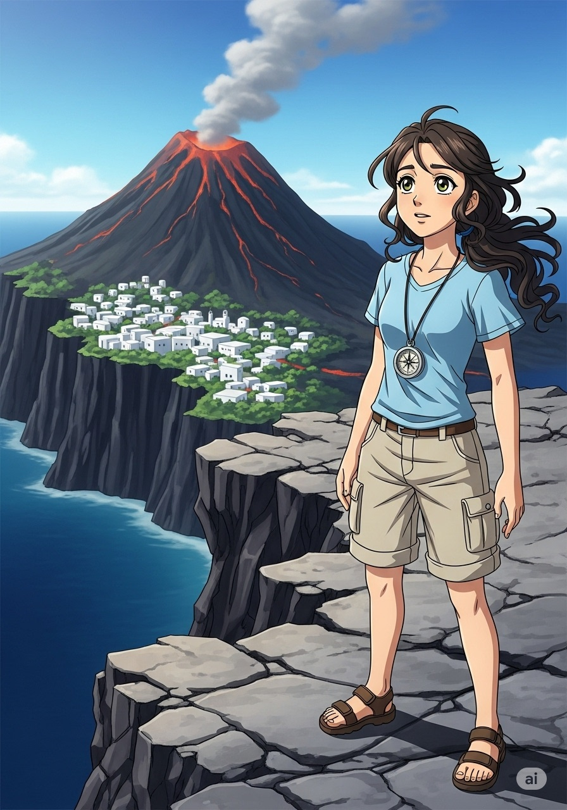
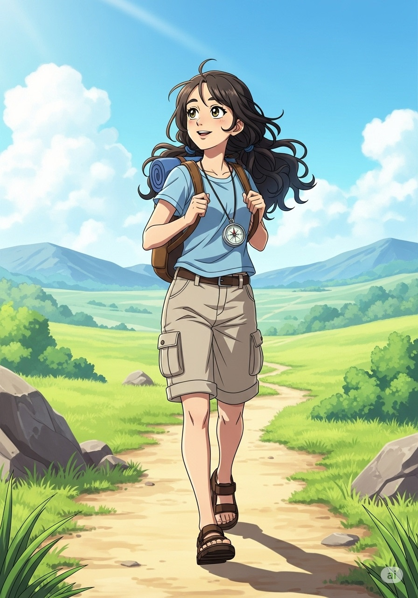

-
Ariadne and the Whispers of Atlantis
written by Panagiotis Domvros
-
Long ago, a whisper travelled on the wind, a tale of a city lost beneath the waves. It was Atlantis, a place of unimaginable beauty and wisdom, a legend that captured the heart of a young explorer named Ariadne.
-
Plato described Atlantis as a land of wealth and harmony with the sea, its people wise and its temples grand.
-
Some believed it lay beyond the Pillars of Hercules by Gibraltar, hidden beneath deep, dark currents.
-
Others thought it rested under the Mediterranean’s warm, blue waters, guarded by sea creatures and tides.
-

On Thera (Santorini), Akrotiri was buried by a volcanic eruption around 1500 BCE, echoing Atlantis’s cataclysm.
-
Legends say Atlantis sank in one day and night, its advanced civilization lost to the sea.
-
Even without proof, explorers and dreamers like Ariadne search for its secrets.
-
For Ariadne, the thrill lay in the journey, learning and imagining lost worlds.
-
Myth or reality, Atlantis reminds us of imagination’s power and nature’s might.
-

In the end, the greatest treasure was the incredible journey of seeking and dreaming.
Practice
1. Which philosopher wrote about Atlantis?
2. Around what time did the Thera eruption occur?
3. Which island’s city is linked to Atlantis myths?
4. What theme does the Atlantis story warn about?
5. Where did Plato place Atlantis?
True or False
1. Akrotiri was buried by a volcanic eruption.
2. Plato wrote about Atlantis in the "Republic."
3. Some continue underwater searches for Atlantis.
4. Atlantis is confirmed to have existed.
5. The legend of Atlantis warns against excessive pride.
Vocabulary Matching
Match each word with its definition:
Further Reading
Plato introduced Atlantis in his dialogues Timaeus and Critias (c. 360 BCE), depicting a powerful island that sank due to hubris. Many believe he intended an allegory rather than historical account.
Archaeologists excavated Akrotiri on Santorini (Thera), covered by a volcanic eruption around 1500 BCE. Its advanced Minoan culture and sudden destruction echo Plato’s narrative, fueling theories but not confirming Atlantis.
In literature and media, Atlantis symbolizes lost knowledge and environmental warning. As modern society faces ecological challenges, the myth reminds us to balance innovation with humility before nature.